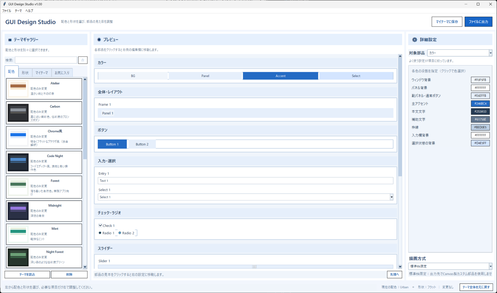

画面の概要

GUI Design Studioは、Tkinter／ttk向けの配色・部品のデザインを選び、細かく調整してアプリに再利用するためのツールです。追加ライブラリは不要です。
起動と画面の使い方
- Python 3.10以上を用意し、
gui_design_studio.pyとtheme_data.py、theme_runtime.pyを同じフォルダに配置します。 - 次のコマンドで起動します。
python gui_design_studio.py - 左側の「配色」タブで色の組み合わせを選び、「形状」タブで部品の見た目を選びます。配色と形状は別々に選択できます。
- 中央のプレビューで見た目を確認し、調整したい部品をクリックして右側の「詳細設定」へ移動します。
配色プリセット20種類と形状プリセット4種類を用意しています。細かな設定は右側で調整できます。
色・部品の見た目を調整する
| 画面位置 | 操作 |
|---|---|
| 左：配色 | 背景色、アクセント色などの配色プリセットを選択 |
| 左：形状 | ボタン等の形状プリセットを選択 |
| 中央：プレビュー | ボタン、入力欄、チェックボックス、スクロールバーなどの見え方を確認。部品をクリックすると対応する設定を開けます。 |
| 右：詳細設定 | カラー／部品ごとの設定を選び、必要な項目だけ調整 |
| 画面下部 | 現在の配色・形状と未保存状態を確認 |
デザイン変更に未保存の項目があると、別テーマを選ぶ際に確認が表示されることがあります。
保存・読み込み・出力
- 編集中の配色や形状を後で再編集したい場合は、右上の 「マイテーマに保存」 を押して名前を付けます。
- 保存済みのものは左側の 「マイテーマ」 タブから選んで読み込めます。お気に入り登録もできます。
- ほかのPythonアプリで使うには、右上の 「ファイルに出力」 を押します。
- 出力される
design_theme.json（設定データ）とdesign_theme.py（適用処理）を利用先アプリのフォルダに配置します。
| ファイル | 役割 |
|---|---|
design_theme.json | 色や部品オプションなどの設定値を保存 |
design_theme.py | Pythonアプリ側で読み込み、ttkスタイルなどを適用 |
「マイテーマに保存」はStudio内部での保存、「ファイルに出力」はほかのアプリで使うための書き出しです。役割が異なります。
Pythonアプリへの適用
基本的な呼び出し例です。利用先アプリと同じフォルダに design_theme.py を配置してください。
import tkinter as tk
from tkinter import ttk
from design_theme import apply_theme
root = tk.Tk()
apply_theme(root)
ttk.Button(root, text="実行").pack(padx=20, pady=20)
root.mainloop()適用範囲：テーマを出力するだけで既存のTkinterアプリの全ウィジェットが自動変換されるわけではありません。
tk.Button から ttk.Button への変更など、元アプリ側の調整が必要な場合があります。File-Searchでは「Urban配色」「アウトライン形状」「標準ttk限定」を組み合わせ、実際にテーマ適用を検証しました。
描画モードの違い
| モード | 特徴 |
|---|---|
| 標準ttk限定 | 標準のttk部品を中心に使用。Canvas製のカスタムボタン・スライダーは使いません。 |
| ハイブリッド | 必要な部品に限って独自描画を使用。 |
| デザイン優先 | 見た目の自由度を優先し、独自描画も活用。 |
最初に既存業務アプリへ適用する場合は、「標準ttk限定」で試すと調整箇所を把握しやすくなります。ただし、OSやTkのバージョンによって表示差が生じる場合があります。
補足・よくある確認事項
| 質問 | 確認すること |
|---|---|
| 保存済みテーマはどこ？ | Windowsでは %LOCALAPPDATA%\GUI-Design-Studio\themes に保存します。 |
| 出力ファイルを実行する？ | design_theme.py は単独起動ではなく、ほかのアプリからインポートして利用するモジュールです。 |
| 画面の見た目が違う | フォント、DPIスケーリング、OS、Tkのバージョンで違いが出る場合があります。 |
| 適用したのに部品が変わらない | 元アプリが tk.* 部品か ttk.* 部品か、スタイル名を確認してください。 |
本ツールはデザインの作成・出力を行います。出力先アプリの動作検証は別途必要です。